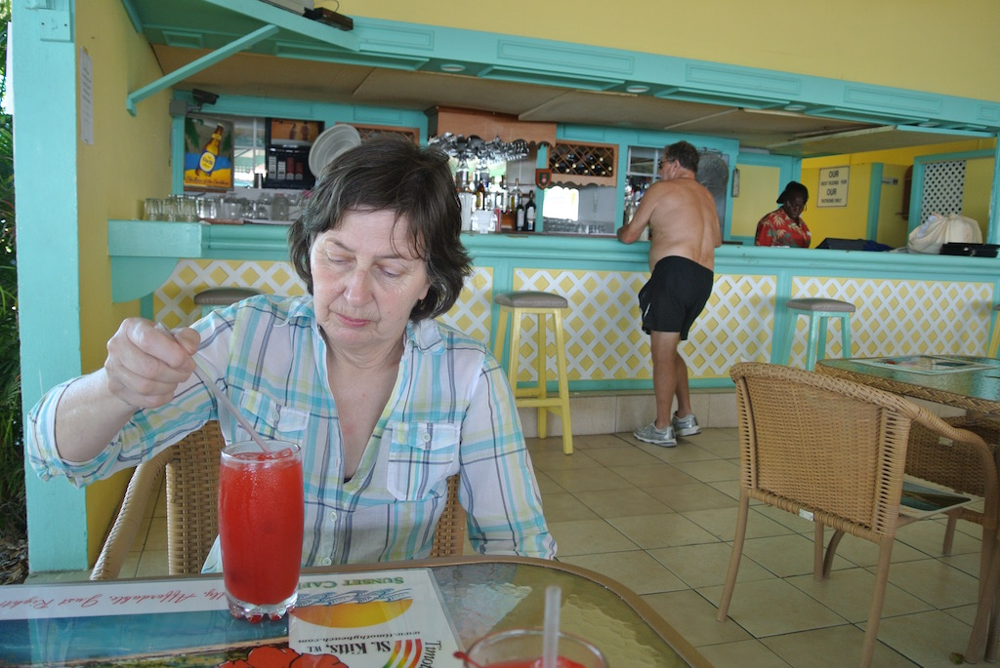

St Kitts 2013
We decided that it would be nice to have some winter sunshine (and warmth), so we booked a one week holiday in St Kitts in the Carribean. As you can see from the map, it is really St Kitts and Nevis (pronounced Neevis) and is towards the northern end of the Carribean islands.
We booked the flight and hotel through British Airways, shunning the 'resort' type hotels on the beach and chose a smaller hotel (the Ocean Terrace Inn) within walking distance of the capital town on St Kitts, Bassterre. We limited our stay to one week, since we didn't want to leave Auntie Bay or Dad for any longer, even though they both live on their own and are pretty much self-sufficient apart from their weekly shop.
The rest of this page is really a short journal of our stay.
Tuesday 29th January
We landed a little late in Antigua, due to a strong headwind. We stayed on the plane as the cleaners came through and then took off for St Kitts. Luckily there were then only about 40 passengers, because passport control took a while to get going.
We arrived at the hotel at about six o'clock and almost went straight to the manager's cocktail party. We spoke with both the manger (an American hotelier who had worked manly in Barbados) and his wife (a Brit who had been living in New York).
Wednesday 30th January
This was our orienting day. It did not start well, with only a trickle of warmish water from the shower. After breakfast we walked into Basseterre (about 15 minutes), received our first East Caribbean dollars (they have the Queen's head on them) when buying some bottled water and looked around the town. The town is a mixture of colonial style buildings and bungalows, ranging from pristine, through dilapidated to derelict. A new development of shops at the shore end of the dock caters for the cruise liners.
We had lunch at the pool-side bar and spent the afternoon planning our excursions and booked a rain forest hike for the next morning. The guest's manager turned up with three men to work out what was wrong with our hot water. We were told that a new heater would be fitted the next morning.
In the evening we ate in the Waterfalls restaurant in the hotel. We sat outside, under a veranda.
Thursday 31st January
Our eight o'clock start was delayed until 8:30, when Gregg, of Gregg's Safaris picked us up in one of his converted Land Rovers. He drove us down to the dock where he picked up a young couple off the cruise ship before heading to the north coast and on to Molineux. He then took us off-road to the start of a hiking trail through the rain forest. He had made the trail and named it Phillips trail after the village of Phillips that is nearby. At the end of the trail we had a pic-nic of local fruits (orange, grapefruit and soursop) and cakes, plus rum with grapefruit juice before heading back.
The changes to the hot water system in our room were still in progress when we got back. We spent most of the afternoon sat by the pool(and given a free lunch), but the new water heater could not be made to work. So the door to the adjoining room was opened so that we could use that bathroom, which had hot water.
We were then offered a free evening meal, which we had at the Fisherman's Wharf restaurant. The conch chowder was good, but quite filling, so we could not finish the main course.
Friday 1st February
An 8:15 start with Joseph from Gregg's Safaris. We met up with Greg, and a family group off the next cruise ship, at the dock, before going on the 'Off the beaten track' tour of old sugar plantation sites. The family group (about ten of them) decided to stay together in one Land Rover, so we had the other to ourselves. We started at one of the plantation great houses called Shadwell, just to the east of Monkey Hill. It had been unused for several years and is up for sale, but had magnificent views over Basseterre Bay. We then went on to the grounds of a private house, up a tortuous track , with 180 degree views covering both the Atlantic and Caribbean coasts. After another of Greg's pic-nics we went to the remains of a sugar windmill and boiler house. Then we had a stop at an Anglican Church before heading back to the hotel.
After lunch by the pool we walked into Basseterre and spent some time in the museum, followed by a walk around the centre and the tax-free port stalls and shops.
That evening was Caribbean Buffet night in the hotel, complete with steel band. Our meal started with 'goat water', which was more like a goat stew! It was served with johnnycake (cornmeal flatbread). We gave the salted fish and pigs feet a miss.
Saturday 2nd February
We caught the 10:30 hotel car to South Frigate Bay (about a 15 minute drive) so as to at least say that we had been to the beach. One other passenger, hired a sun bed and an umbrella and seemed to stay there all day (until 3:30 when the car collected us). We walked up and down the not too inspiring beach, I had a ten-minute swim in the Caribbean (and someone paddled) and then we walked the half mile across the peninsular to North Frigate Bay, which is on the Atlantic coast.

After a walk along part of the beach we made the return journey and had a long lunch in the shade of Timothy Resort cafe (marlin and chips). Another walk along the beach, another short swim and it was time to be collected. We saw several mongoose, which were brought in to kill rats in the cane fields, but wiped out all the snakes on the island.
We are very pleased that we chose to stay at the Ocean Terrace Inn. Timothy Resort was an option, but there is nothing there except the beach and the whole area is modern villas, apartments and hotels.
We had a light meal at the Fisherman's Wharf, where a jazz band (keyboard, bass guitar and drums) were playing.
Sunday 3rd February
A lazy day. We organised for a taxi to pick us up at the hotel at 10:30 and take us to Fairview Great House. This was advertised as a 'restored' plantation house set in botanic gardens. It only took ten minutes to get there (with a running commentary from the driver on the way) and was a beautiful spot, part way up the hillside looking over the Caribbean and with a view to Nevis.
The house looked the part and the grounds were small but well kept and with labels on most of the trees, shrubs and plants. Adjoined to the house is a restaurant. We were told by the entrance attendant that if we had lunch in the restaurant, then we would not need to pay an entrance fee. However, we paid our $10 each. We seemed to be the only visitors (a few more arrived later for lunch).
It only took about half an hour to amble around the garden. We then ventured into the house, there being no one about. When we did finally meet someone we discovered that the house had been totally rebuilt by the current owner. It had previously been a hotel, with cottages in the grounds as rooms. It's connection with the sugar plantation had finished in the 18th century and the house had passed through quite a number of owners.
Looking at the house (and reading everything in the exhibition room) took another half hour. Since it would be over two hours before the taxi returned, we spent a long time over a fruit punch and then went and sat in a small summer house in the garden. The taxi driver was silent on the way back.
The rest of the afternoon was spent sitting in the hotel grounds. The pool was much colder than the Caribbean!
We ate in the Waterfalls restaurant.
Monday 4th February
 Today was all about having lunch in Nevis. We decided to catch the midday ferry so that we could find somewhere for lunch, have a walk around Charlestown and then get the four o'clock ferry back. So we spent some time by the pool, reading, and then walked into Basseterre.
Today was all about having lunch in Nevis. We decided to catch the midday ferry so that we could find somewhere for lunch, have a walk around Charlestown and then get the four o'clock ferry back. So we spent some time by the pool, reading, and then walked into Basseterre.
We were lucky in that the ferry to Nevis had an open seating area on the top deck, so we had good views all round. A sea bird followed the boat for a while and some people said they saw flying fish and a turtle, but we missed them.
There seemed to be even less in Charlestown to see than we thought. So after a very cheap lunch in the Ginnery we sat under cover at the dock and waited for the four o'clock boat. Unfortunately this time it was one with only internal seating.
After a shower we had just a starter at the Fisherman's Wharf restaurant.
Tuesday 5th February
In theory we had to check out by midday. So we went quite early into Basseterre to see if we could find some coconut fudge. People seemed bemused at the idea, but suggested pharmacies and eventually the Plus Size shop (which did not open), so we gave up. We looked in a couple of department stores, particularly at children's clothes and then got caught in a shower in the port.
We returned to the hotel, showered and packed so as to check out by midday, but were told not to rush, since our transport to the airport would not be here until four o'clock. So we sat in the shade by the pool and read.
A different taxi to the one that collected us from the airport arrived at ten past four. For some reason he went via the middle of Basseterre and gave us a guided tour on the way! However, we arrived in plenty of time. We were able to buy some things in the duty free shop before boarding. The partially full plane left roughly on time for Antigua where we spent an hour as it filled up. We landed at Gatwick at 7:20 GMT and arrived home at ten past nine. It was cold!
© David James 2016 Last updated: 6 March 2016